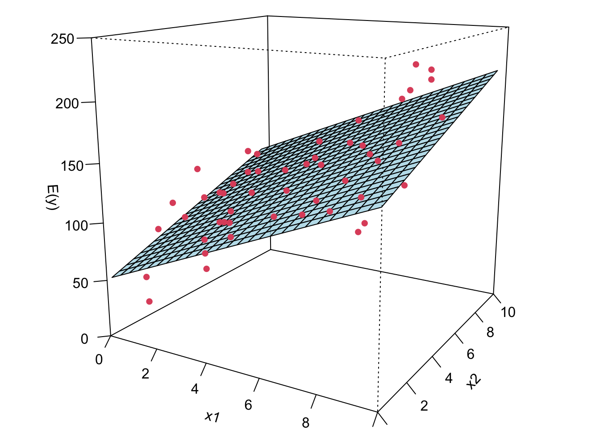
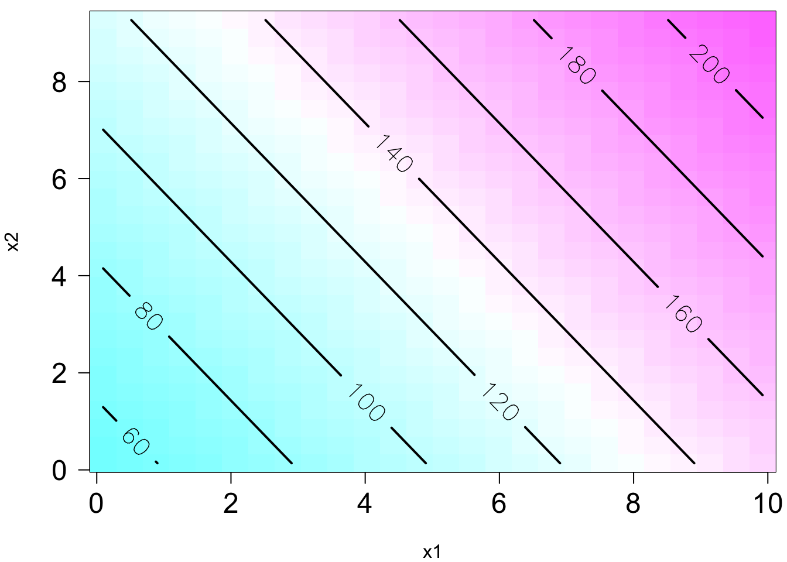
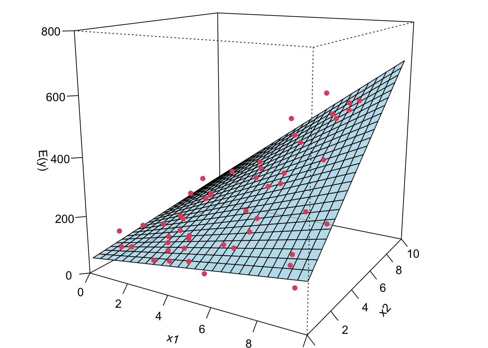

28 Multiple Linear Regression*
\[ \def\cD{{\cal D}} \def\cL{{\cal L}} \def\cX{{\cal X}} \def\cF{{\cal F}} \def\cH{{\cal H}} \def\bA{\mathbf{A}} \def\bB{\mathbf{B}} \def\bX{\mathbf{X}} \def\bH{\mathbf{H}} \def\bI{\mathbf{I}} \def\bU{\mathbf{U}} \def\bD{\mathbf{D}} \def\bV{\mathbf{V}} \def\bS{\mathbf{S}} \def\bW{\mathbf{W}} \def\bY{\mathbf{Y}} \def\bZ{\mathbf{Z}} \def\bK{\mathbf{K}} \def\bx{\mathbf{x}} \def\by{\mathbf{y}} \def\bs{\mathbf{s}} \def\br{\mathbf{r}} \def\bu{\mathbf{u}} \def\be{\mathbf{e}} \def\bv{\mathbf{v}} \def\bp{\mathbf{p}} \def\bw{\mathbf{w}} \def\bz{\mathbf{z}} \def\bzero{\mathbf{0}} \def\balpha{\boldsymbol \alpha} \def\bbeta{\boldsymbol \beta} \def\btheta{\boldsymbol \theta} \def\bSigma{\boldsymbol \Sigma} \def\bxi{\boldsymbol \xi} \def\bmu{\boldsymbol \mu} \def\bep{\boldsymbol \epsilon} \def\T{\text{T}} \def\Trace{\text{Trace}} \def\Cov{\text{Cov}} \def\cov{\text{Cov}} \def\Corr{\text{Corr}} \def\cor{\text{Corr}} \def\Var{\text{Var}} \def\var{\text{Var}} \def\E{\text{E}} \def\pr{\text{pr}} \def\Prob{\text{P}} \DeclareMathOperator*{\argmin}{arg\,min} \DeclareMathOperator*{\argmax}{arg\,max} \]
When more than one predictors are considered and put in a regression model, we are dealing with multiple linear regression. Multiple linear regression (MLR) is pretty similar to simple linear regression (SLR). They share the same idea and concept in terms of prediction and inference.
28.1 Why Multiple Regression?
The first question you may ask is why we want to use multiple regression? In practice, we often have more than one predictor in a given study, and our target response may be affected by several factors. For example, how amount of money spent on advertising on different media affect the total sales of some product? We may need more than one predictors because usually companies will spend money on several different media, not just one.
Data: total sales \((Y)\) and amount of money spent on advertising on TV \((X_1)\), YouTube \((X_2)\), and Instagram \((X_3)\).
We want to predict sales based on the three advertising expenditures and see which medium is more effective.
Total sales \((Y)\) and amount of money spent on advertising on YouTube (YT) \((X_1)\), Facebook (FB) \((X_2)\), Instagram (IG) \((X_3)\).


- Predict sales based on the three advertising expenditures and see which medium is more effective.
You may wonder, how about we just fit three separate simple linear regression models, one for each predictor. Yes, we could do that. And if we do this, we’ll see that, as shown in the figure below, advertising on the 3 media is valuable because the more the money we put in, the higher sales of products we’ll get. However, fitting a separate SLR model for each predictor is not satisfactory. Let’s see why.
- üëâ How to make a single prediction of sales given levels of the 3 advertising media budgets?
-
How to predict the sales when the amount spent on YT is 50, 100 on FB and 30 on IG?
It is unclear how to make a single prediction of sales given levels of the three advertising media budgets, since each of the budgets is associated with a separate regression equation.
-
- üëâ Each regression equation ignores the other 2 media in forming coefficient estimates.
The effect of FB advertising on sales may be increased or decreased when YT and IG advertising are in the model.
-
IG advertising may have no impact on sales when YT and FB advertising are in the model.
If the three media budgets are correlated with each other, this can lead to very misleading estimates of the individual media effects on sales.
- üëçüëç Better approach: extend the SLR model so that it can directly accommodate multiple predictors.
I hope you don’t feel…
What I hope is…
28.2 Multiple Linear Regression (MLR) Model
Suppose we have \(k\) distinct predictors. The (population) multiple linear regression model is \[Y_i= \beta_0 + \beta_1X_{i1} + \beta_2X_{i2} + \dots + \beta_kX_{ik} + \epsilon_i\]
\(X_{ij}\): \(j\)-th regressor value on \(i\)-th measurement, \(j = 1, \dots, k\).
\(\beta_j\): \(j\)-th coefficient quantifying the association between \(X_j\) and \(Y\).
In the advertising example, \(k = 3\) and \[\texttt{sales} = \beta_0 + \beta_1 \times \texttt{YouTube} + \beta_2 \times \texttt{Facebook} + \beta_3 \times \texttt{Instagram} + \epsilon\] We interpret \(\beta_j\), \(j = 1, \dots, p\), as the average effect on \(Y\) of a one unit increase in \(X_j\), holding all other predictors fixed. Later, we will learn how to interpret the coefficients in more detail.
The model assumptions are same same as SLR that \(\epsilon_i \stackrel{iid}{\sim} N(0, \sigma^2).\) When \(k = 1\), MLR is reduced to SLR.
Given the training sample data \((x_{11}, \dots, x_{1k}, y_1), (x_{21}, \dots, x_{2k}, y_2), \dots, (x_{n1}, \dots, x_{nk}, y_n),\) the sample MLR model is \[\begin{align} y_i &= \beta_0 + \beta_1x_{i1} + \beta_2x_{i2} + \dots + \beta_k x_{ik} + \epsilon_i \\ &= \beta_0 + \sum_{j=1}^k\beta_j x_{ij} + \epsilon_i, \quad i = 1, 2, \dots, n. \end{align}\]
Now I’m gonna show you what a MLR looks like when we fit it to the data. If we have two predictors, we will have a sample regression plane. If we have more than two predictors in the model, we are not able to visualize it, but the idea is the same. We will have something called hyperplane or response surface that basically play the same role as the regression plane in 2D or regression line in 1D.
The plot on the right is the contour plot when we project the plot onto the \(X_1\)-\(X_2\) plane. You can see that basically the higher \(X_1\) and/or the higher \(X_2\), the higher value of \(Y\). Moreover, you can see that the level curves are straight and parallel, meaning that the effect of \(X_1\) on \(Y\) does not change with the values of \(X_2\) or the effect does not depend on the level of \(X_2\).
- \(y = \beta_0 + \beta_1x_1 + \beta_{2}x_2 + \epsilon\)
- \(E(y \mid x_1, x_2) = 50 + 10x_1 + 7x_2\)


Remember in SLR, we can have a liner model that describes a nonlinear relationship. Same in MLR. We can have a linear model that generates a nonlinear response surface!
- \(y = \beta_0 + \beta_1x_1 + \beta_{2}x_2 + \beta_{12}x_1x_2 + \epsilon\)
- This is in fact a linear regression model: let \(\beta_3 = \beta_{12}, x_3 = x_1x_2\).
- \(E(y \mid x_1, x_2) = 50 + 10x_1 + 7x_2 + 5x_1x_2\)
- üòé ü§ì A linear model generates a nonlinear response surface!


üòé ü§ì A linear regression model can describe a complex nonlinear relationship between the response and predictors! The following is a 2nd order model with interaction.
- \(y = \beta_0 + \beta_1x_1 + \beta_{2}x_2 + \beta_{11}x_1^2 + \beta_{22}x_2^2 + \beta_{12}x_1x_2 + \epsilon\)
- \(E(y) = 800+10x_1+7x_2 -8.5x_1^2-5x_2^2- 4x_1x_2\)

28.3 Estimation of Model Parameters
28.3.1 Least Squares Estimation (LSE)
As SLR, we can define the least-squares function as the sum of squares of epsilon. The least-squares function is \[S(\alpha_0, \alpha_1, \dots, \alpha_k) = \sum_{i=1}^n\left(y_i - \alpha_0 - \sum_{j=1}^k\alpha_j x_{ij}\right)^2\] The function \(S(\cdot)\) must be minimized with respect to the coefficients, i.e., \[(b_0, b_1, \dots, b_k) = \underset{{\alpha_0, \alpha_1, \dots, \alpha_k}}{\mathrm{arg \, min}} S(\alpha_0, \alpha_1, \dots, \alpha_k)\]
We are going to choose the sample statistics \(b_0\), \(b_1\), …, \(b_k\) as the estimates of \(\beta_0, \beta_1, \dots, \beta_k\) so that \(S(.)\) is minimized when \(b_0\), \(b_1\), …, \(b_k\) are plugged in the function.
If we look at the geometry of least squares estimation of MLR, we have a visualization like this. Again, in SLR, different \(b_0\) and \(b_1\)s give us different sample regression lines. In MLR, suppose we have two predictors, and different \(b_0\) and \(b_1\) and \(b_2\) give us a different sample regression plane. Geometrically speaking, we are trying to find a sample regression plane such that the sum of the squared distance between the observations (denoted by those blue points) and the plane is minimized. For more than 2 predictor case, we are not able to visualize it because we live a 3D world, but the idea is exactly the same. And we called the regression plane a hyperplane.
Again similar to SLR, we can take derivative w.r.t \(\beta_0\), \(\beta_1\), to the \(\beta_k\). And we are gonna have \(p = k + 1\) equations with \(p\) unknown parameters. So we can find one and only one solution to \(\beta_0\), \(\beta_1\), to the \(\beta_k\), which are \(b_0\), \(b_1\), …, \(b_k\). And the \(p\) equations are the least squares normal questions. The ordinary least squares estimators are the solutions to the normal equations.
\[\begin{align} \left.\frac{\partial S}{\partial\alpha_0}\right\vert_{b_0, b_1, \dots, b_k} &= -2 \sum_{i=1}^n\left(y_i - b_0 - \sum_{j=1}^k b_j x_{ij}\right) = 0\\ \left.\frac{\partial S}{\partial\alpha_j}\right\vert_{b_0, b_1, \dots, b_k} &= -2 \sum_{i=1}^n\left(y_i - b_0 - \sum_{j=1}^k b_j x_{ij}\right)x_{ij} = 0, \quad j = 1, 2, \dots, k \end{align}\]
Based on the MLR model and assumptions, the LS estimator \({\bf b} = (b_0, b_1, \dots, b_k)'\) is BLUE, Best Linear Unbiased Estimator. üëç
Linear : Each \(b_j\) is a linear combination of \(y_1, \dots, y_n\).
Unbiased : Each \(b_j\) is normally distributed with mean \(\beta_j\).
Best : Each \(b_j\) has the minimum variance, comparing to all other unbiased estimator for \(\beta_j\) that is a linear combo of \(y_1, \dots, y_n\).
Example: Least Squares Estimation
In this chapter, we use Delivery Time Data of Example 3.1 from Introduction to Linear Regression Analysis, 6th edition to demo MLR.
# Load the data set
delivery <- read.csv(file = "./data/data-ex-3-1.csv", header = TRUE)
delivery_data <- delivery[, -1]
colnames(delivery_data) <- c("time", "cases", "distance")
delivery_data time cases distance
1 16.7 7 560
2 11.5 3 220
3 12.0 3 340
4 14.9 4 80
5 13.8 6 150
6 18.1 7 330
7 8.0 2 110
8 17.8 7 210
9 79.2 30 1460
10 21.5 5 605
11 40.3 16 688
12 21.0 10 215
13 13.5 4 255
14 19.8 6 462
15 24.0 9 448
16 29.0 10 776
17 15.3 6 200
18 19.0 7 132
19 9.5 3 36
20 35.1 17 770
21 17.9 10 140
22 52.3 26 810
23 18.8 9 450
24 19.8 8 635
25 10.8 4 150import pandas as pd
delivery_data = pd.read_csv('./data/delivery_data.csv')
delivery_data time cases distance
0 16.68 7 560
1 11.50 3 220
2 12.03 3 340
3 14.88 4 80
4 13.75 6 150
5 18.11 7 330
6 8.00 2 110
7 17.83 7 210
8 79.24 30 1460
9 21.50 5 605
10 40.33 16 688
11 21.00 10 215
12 13.50 4 255
13 19.75 6 462
14 24.00 9 448
15 29.00 10 776
16 15.35 6 200
17 19.00 7 132
18 9.50 3 36
19 35.10 17 770
20 17.90 10 140
21 52.32 26 810
22 18.75 9 450
23 19.83 8 635
24 10.75 4 150\(y\): the amount of time required by the route driver to stock the vending machines with beverages
\(x_1\): the number of cases stocked
\(x_2\): the distance walked by the driver
Goal: fit a MLR model \(y = \beta_0 + \beta_1x_1 + \beta_2x_2 + \epsilon\) to the amount of time required by the route driver to service the vending machines
Note
Always get to know your data set before you fit any statistical or machine learning model to the data.
Each plot shows the relationship between a pair of variables.
pairs(delivery_data)Sometimes a 3D scatterplot is useful in visualizing the relationship between the response and the regressors when there are only two regressors.
Code
par(mgp = c(2, 0.8, 0), las = 1, mar = c(4, 4, 0, 0))
library(scatterplot3d)
scatterplot3d(x = delivery_data$cases, y = delivery_data$distance, z = delivery_data$time,
xlab ="cases", ylab = "distance", zlab = "time",
xlim = c(2, 30), ylim = c(36, 1640), zlim = c(8, 80),
box = TRUE, color = "blue", mar = c(3, 3, 0, 2), angle = 30, pch = 16)
To fit the MLR model, we again use lm(). In the furmula argument, we use + to add predictors. coef(delivery_lm) or delivery_lm$coef can be used to grab the LS estimates of coefficients.
import matplotlib.pyplot as plt
pd.plotting.scatter_matrix(delivery_data, figsize=(8, 8))array([[<Axes: xlabel='time', ylabel='time'>,
<Axes: xlabel='cases', ylabel='time'>,
<Axes: xlabel='distance', ylabel='time'>],
[<Axes: xlabel='time', ylabel='cases'>,
<Axes: xlabel='cases', ylabel='cases'>,
<Axes: xlabel='distance', ylabel='cases'>],
[<Axes: xlabel='time', ylabel='distance'>,
<Axes: xlabel='cases', ylabel='distance'>,
<Axes: xlabel='distance', ylabel='distance'>]], dtype=object)plt.show()Sometimes a 3D scatterplot is useful in visualizing the relationship between the response and the regressors when there are only two regressors.
Code
fig = plt.figure()
ax = fig.add_subplot(111, projection='3d')
ax.scatter(delivery_data['cases'],
delivery_data['distance'],
delivery_data['time'])
ax.set_xlabel('Cases')
ax.set_ylabel('Distance')
ax.set_zlabel('Time')
plt.show()To fit the MLR model, we again use ols(). In the furmula argument, we use + to add predictors. delivery_ols.params can be used to grab the LS estimates of coefficients.
from statsmodels.formula.api import ols
delivery_ols = ols(formula='time ~ cases + distance', data=delivery_data).fit()
delivery_ols.paramsIntercept 2.341231
cases 1.615907
distance 0.014385
dtype: float64
Note
There is another function OLS() that takes response vector y and design matrix X as input arguments to fit the linear regression model.
import statsmodels.api as sm
X = delivery_data[['cases', 'distance']]
X = sm.add_constant(X) # Adds a constant term to the predictor
y = delivery_data['time']
delivery_OLS = sm.OLS(y, X).fit()\[\hat{y} = 2.34 + 1.62x_1 + 0.014x_2\] Interpretation of coefficients needs additional attention.
\(b_1\): All else held constant, for one case of product stocked increase, we expect the delivery time to be longer, on average, by 1.62 minutes.
\(b_2\): All else held constant, one additional foot walked by the driver causes the delivery time, on average, to be 0.014 minutes longer.
\(b_0\): The delivery time with no number of cases of product stocked and no distance walked by the driver is expected to be 2.34 minutes. (Make sense?!)
When we interpret slopes or the effect of any predictor on the response in MLR, for example, \(x_1\), it needs to be measured on the same scale, meaning that all other predictors should not change because any change in them will change the response value too, and this response change is not due to \(x_1\), and not measured or explained by \(b_1\).
For regression we usually don’t pay much attention to \(\beta_0\) because quite often, it does not have natural physical meaning. Still, depending on your research questions, you may be interested in the intercept term. For example, you may want to know your response value when your predictor, temperature, is at value zero. Moreover, it is quite often that we normalize/standardize our variables before we fit MLR. If that is the case, the intercept means the average response level when the predictors are at their average level.
The LS fitted regression plane is shown below.
28.3.2 Estimation of \(\sigma^2\)
Same as SLR, the estimate of \(\sigma^2\), denoted as \(\hat{\sigma}^2\) or \(s^2\), is the mean square residual of the model.
Remember that the sum of squares residual is \(SS_{res} = \sum_{i=1}^ne_i^2 = \sum_{i=1}^n(y_i - \hat{y}_i)^2\). Then the mean square residual is \(SS_{res}\) divided by its degrees of freedom: \(MS_{res} = \frac{SS_{res}}{n - p}\) with \(p = k + 1\). Note that the degrees of freedom is \(n - p\) where \(p\) is the number of beta coefficients in the model. When \(p = 2\), it goes back to the SLR case.
\(S^2 = MS_{res}\) is unbiased for \(\sigma^2\), i.e., \(E[MS_{res}] = \sigma^2\). Keep in mind that \(S^2 = MS_{res}\) is a random variable. Before data are collected \(Y_i\) and \(\hat{Y}_i\) are assumed random variables, and \(S^2\), a function of random variables, will be a random variable too.
\(\hat{\sigma}^2 = MS_{res}\) is model dependent. Its value varies with change of the model. If our model is specified correctly, \(\hat{\sigma}^2\) depends only on our data quality. If our data have lots of noise itself, there is nothing we can do.
\(\hat{\sigma}^2\) of SLR may be quite larger than the \(\hat{\sigma}^2\) of MLR if the predictors in MLR capture a lots of variation of \(y\) that cannot be explained by the only predictor in the SLR, and are treated as noises or unexplained variation. Remember \(S^2\) measures the variation or the size of the unexplained noise about the fitted regression line/hyperplane, and we prefer a small residual mean square.
Example: Estimation of \(\sigma^2\)
Here I show three methods to obtain the \(\sigma^2\) estimate. The method 1 first compute the summary of the fitted result, which is saved as a list, then get the element sigma that is \(\hat{\sigma}\). If you look at the summary output, the value of \(\hat{\sigma}\) is shown in the row: Residual standard error: 3.26 on 22 degrees of freedom
## method 1
summ_delivery <- summary(delivery_lm) ## check names(summ_delivery)
summ_delivery$sigma ^ 2[1] 10.6summary(delivery_lm)
Call:
lm(formula = time ~ cases + distance, data = delivery_data)
Residuals:
Min 1Q Median 3Q Max
-5.788 -0.663 0.436 1.157 7.420
Coefficients:
Estimate Std. Error t value Pr(>|t|)
(Intercept) 2.34123 1.09673 2.13 0.04417 *
cases 1.61591 0.17073 9.46 3.3e-09 ***
distance 0.01438 0.00361 3.98 0.00063 ***
---
Signif. codes: 0 '***' 0.001 '**' 0.01 '*' 0.05 '.' 0.1 ' ' 1
Residual standard error: 3.26 on 22 degrees of freedom
Multiple R-squared: 0.96, Adjusted R-squared: 0.956
F-statistic: 261 on 2 and 22 DF, p-value: 4.69e-16The second method simply uses the definition of \(MS_{res}\). We first calculate \(SS_{res}\), then divide it by \(n-3\) because in this example, we have 2 predictors \((k = 2)\), and 3 coefficients \(\beta_0\), \(\beta_1\), and \(\beta_2\).
## method 2
n <- length(delivery_lm$residuals)
(SS_res <- sum(delivery_lm$residuals * delivery_lm$residuals))[1] 234SS_res / (n - 3)[1] 10.6The third method also uses the definition of \(MS_{res}\). The difference is that here we use \(\sum_{i=1}^n(y_i - \hat{y}_i)^2\) instead of \(\sum_{i=1}^ne_i^2\).
## method 3
(SS_res1 <- sum((delivery_data$time - delivery_lm$fitted.values) ^ 2))[1] 234SS_res1 / (n - 3)[1] 10.6Here I show three methods to obtain the \(\sigma^2\) estimate. The method 1 obtains the mean square error of residual from the fitted object.
# Method 1: Residual standard error
delivery_ols.mse_resid10.624167155479675The second method simply uses the definition of \(MS_{res}\). We first calculate \(SS_{res}\), then divide it by \(n-3\) because in this example, we have 2 predictors \((k = 2)\), and 3 coefficients \(\beta_0\), \(\beta_1\), and \(\beta_2\).
# Method 2: Residual Sum of Squares (RSS) and variance estimation
n = len(delivery_ols.resid)
import numpy as np
SS_res = np.sum(delivery_ols.resid ** 2)
SS_res233.73167742055284SS_res / (n - 3)10.624167155479675The third method also uses the definition of \(MS_{res}\). The difference is that here we use \(\sum_{i=1}^n(y_i - \hat{y}_i)^2\) instead of \(\sum_{i=1}^ne_i^2\).
# Method 3: Another way to calculate RSS and variance estimation
SS_res1 = np.sum((delivery_data['time'] - delivery_ols.fittedvalues) ** 2)
SS_res1233.73167742055284SS_res1 / (n - 3)10.62416715547967528.3.3 Wald CI for Coefficients
The \((1-\alpha)100\%\) Wald CI for \(\beta_j\), \(j = 0, 1, \dots, k\) is \[\left(b_j- t_{\alpha/2, n-p}~se(b_j), \quad b_j + t_{\alpha/2, n-p}~ se(b_j)\right)\] where \(se(b_j)\) is the standard error of \(b_j\). The formula come from the fact that each of the statistics \(\frac{b_j - \beta_j}{se(b_j)}, j = 0, 1, 2, \dots, k\) follows \(t_{n-p}\) distribution. \(se(b_j)\) is a function of \(\hat{\sigma}^2\) and \(x_{ij}s\).
Example: Wald CI for Coefficients
We simply use confint()command with the fitted result put inside to obtain the CI for coefficients.
(ci <- confint(delivery_lm)) 2.5 % 97.5 %
(Intercept) 0.06675 4.6157
cases 1.26182 1.9700
distance 0.00689 0.0219ci = delivery_ols.conf_int()
ci 0 1
Intercept 0.066752 4.615710
cases 1.261825 1.969990
distance 0.006892 0.021878These are marginal CIs separately for each \(b_j\). These interval estimates do not take correlation of coefficients into account. One coefficient may be higher when another is lower. We can only use the intervals one at a time when doing interval estimation. When we want to do interval estimation for several coefficients together at the same time, these intervals are not that accurate.
Covariance of random variables \(X\) and \(Y\), \(\cov(X, Y)\) is defined as \[\small \cov(X, Y) = E[(X - E(X))(Y - E(Y))]\]
The covariance matrix of the coefficient vector \({\bf b} = (b_0, b_1, b_2)'\) is \[\scriptsize \begin{align} \cov({\bf b}) &= \begin{bmatrix} \cov(b_0, b_0) & \cov(b_0, b_1) & \cov(b_0, b_2) \\ \cov(b_1, b_0) & \cov(b_1, b_1) & \cov(b_1, b_2) \\ \cov(b_2, b_0) & \cov(b_2, b_1) & \cov(b_2, b_2) \end{bmatrix} \end{align}\]
The correlation matrix of the coefficient vector \({\bf b} = (b_0, b_1, b_2)'\) is \[\scriptsize \begin{align} \cor({\bf b}) &= \begin{bmatrix} 1 & r_{01} & r_{02} \\ r_{10} & 1 & r_{12} \\ r_{20} & r_{21} & 1 \end{bmatrix} \end{align}\]
In fact, all \(b_j\) are correlated!
Example: Correlated Coefficients
We use vcov() to obtain the variance-covariance matrix of \(b_j\)s. The square root of its diagonal terms are \(se(b_0)\), \(se(b_1)\), and \(se(b_2)\) respectively.
## variance-covariance matrix
(V <- vcov(delivery_lm)) (Intercept) cases distance
(Intercept) 1.202817 -0.047263 -8.89e-04
cases -0.047263 0.029150 -5.08e-04
distance -0.000889 -0.000508 1.31e-05(Intercept) cases distance
1.09673 0.17073 0.00361 We can convert the covariance matrix into a correlation matrix using cov2cor(). Clearly \(b_1\) and \(b_2\) are negatively correlated. The individual CI previously obtained ignores the correlation between \(b_j\)s.
## correlation matrix
cov2cor(V) (Intercept) cases distance
(Intercept) 1.000 -0.252 -0.224
cases -0.252 1.000 -0.824
distance -0.224 -0.824 1.000We use cov_params() to obtain the variance-covariance matrix of \(b_j\)s. The square root of its diagonal terms are \(se(b_0)\), \(se(b_1)\), and \(se(b_2)\) respectively.
## variance-covariance matrix
V = delivery_ols.cov_params()
V Intercept cases distance
Intercept 1.202817 -0.047263 -0.000889
cases -0.047263 0.029150 -0.000508
distance -0.000889 -0.000508 0.000013## standard error
np.sqrt(np.diag(V))array([1.09673017, 0.17073492, 0.00361309])We can convert the covariance matrix into a correlation matrix using sm.stats.moment_helpers.cov2corr(). Clearly \(b_1\) and \(b_2\) are negatively correlated. The individual CI previously obtained ignores the correlation between \(b_j\)s.
import statsmodels.api as sm
## correlation matrix
sm.stats.moment_helpers.cov2corr(V)array([[ 1. , -0.25240355, -0.22433649],
[-0.25240355, 1. , -0.824215 ],
[-0.22433649, -0.824215 , 1. ]])How do we specify a confidence level that applies simultaneously to a set of interval estimates? For example, a \(95\%\) confidence “interval” for both \(b_1\) and \(b_2\)?
The \((1-\alpha)100\%\) CI for a set of \(b_j\)s will be an elliptically-shaped region! The blue region below is the 95% confidence region for \(\beta_1\) and \(\beta_2\). The black dashed lines indicate the 95% Wald CI for \(\beta_1\) and \(\beta_2\).
With repeated sampling, 95% of such ellipses will simultaneously include \(\beta_1\) and \(\beta_2\), if the fitted model is correct and normality holds. The orientation of the ellipse reflects the negative correlation between the estimates. Contrast the 95% confidence ellipse with the marginal 95% confidence intervals, also shown on the plot. Some points within the marginal intervals (red point) — with smaller values for both of the coefficients, for example — are implausible according to the joint region. Similarly, the joint region includes values of the coefficient for cases (black point), for example, that are excluded from the marginal interval.
Code
par(mgp = c(2.8, 0.9, 0), mar = c(4, 4, 2, 0))
## confidence region
car::confidenceEllipse(
delivery_lm,
levels = 0.95, fill = TRUE,
which.coef = c("cases", "distance"),
main = expression(
paste("95% Confidence Region for ",
beta[1], " and ", beta[2])
)
)
## marginal CI for cases
abline(v = ci[2, ], lty = 2, lwd = 2)
## marginal CI for distance
abline(h = ci[3, ], lty = 2, lwd = 2)
points(x = 1.4, y = 0.01, col = "red", cex = 2, pch = 16)
points(x = 2, y = 0.008, col = "black", cex = 2, pch = 16)28.3.4 CI for the Mean Response \(E(y \mid {\bf x}_0)\)
The fitted value at a point \({\bf x}_0 = (1, x_{01}, x_{02}, \dots, x_{0k})'\) is \[\hat{y}_0 = b_0 + b_1x_{01} + \cdots + b_kx_{0k}\]
This is an unbiased estimator for \(E(y \mid {\bf x}_0)\).
The \((1-\alpha)100\%\) CI for \(E(y \mid {\bf x}_0)\) is \[\left(\hat{y}_0 - t_{\alpha/2, n-p} ~ se(\hat{y}_0), \quad \hat{y}_0 + t_{\alpha/2, n-p} ~ se(\hat{y}_0)\right).\] It is from the fact that \(\frac{\hat{y}_0 - E(y|{\bf x}_0)}{se(\hat{y}_0)}\sim t_{n-p}\) where \(se(\hat{y}_0)\) is a function of \(\hat{\sigma}\), \(x_{ij}\)s, and \({\bf x}_0\).
Example: CI for the Mean Response
We learned how to use predict() in the previous chapter. For MLR, we need to specify the 2 predictor values cases = 8, and distance = 275, and save it as a data frame in the newdata argument. Note that the name cases and distance should be exactly the same as their column name of the data delivery_data.
predict(delivery_lm,
newdata = data.frame(cases = 8, distance = 275),
interval = "confidence", level = 0.95) fit lwr upr
1 19.2 17.7 20.8We learned how to use get_prediction() in the previous chapter. For MLR, we need to specify the 2 predictor values cases = 8, and distance = 275, and save it as a DataFrame in the exog argument. Note that the name cases and distance should be exactly the same as their column name of the data delivery_data.
new_data = pd.DataFrame({'cases': [8], 'distance': [275]})
predict = delivery_ols.get_prediction(exog=new_data)
predict.conf_int()array([[17.65389505, 20.79473705]])28.3.5 PI for New Observations
Often we also want to predict the future observation \(y_0\) when \({\bf x} = {\bf x}_0\). A point estimate is \(\hat{y}_0 = b_0 + b_1x_{01} + \cdots + b_kx_{0k}\), same as the point estimate of the mean response. When we can only use one single value to predict the mean response or a new observation value, \(\hat{y}_0\) is the best we can do. The \((1-\alpha)100\%\) PI for \(y_0\) is \[\left(\hat{y}_0 - t_{\alpha/2, n-p} ~se(y_0 - \hat{y}_0), \quad \hat{y}_0 + t_{\alpha/2, n-p} ~se(y_0 - \hat{y}_0)\right)\]
Example: PI for New Observations
When predicting a new observation with uncertainty, we use interval = "predict". The interpretation is the same as the one in SLR.
predict(delivery_lm,
newdata = data.frame(cases = 8, distance = 275),
interval = "predict", level = 0.95) fit lwr upr
1 19.2 12.3 26.2When predicting a new observation with uncertainty, we use summary_frame(), then grab ‘obs_ci_lower’ and ‘obs_ci_upper’ from the output. The interpretation is the same as the one in SLR.
summary_frame = predict.summary_frame(alpha=0.05)
summary_frame[['obs_ci_lower', 'obs_ci_upper']] obs_ci_lower obs_ci_upper
0 12.284559 26.16407328.3.6 Predictor Effect Plots
A complete picture of the regression surface requires drawing a \(p\)-dimensional graph.
Predictor effect plots look at 1 or 2D plots for each predictor.
To plot the predictor effect plot for \(x_j\), \(x_1\) for example, we
fix the values of all other predictors (\(x_2\) in the example)
substitute these fixed values into the fitted regression equation.
Usually we fix all other predictors (\(x_2\) in the example) at their average. In our example, we have \(\hat{y} = 2.34 + 1.62 ~x_1 + 0.014 (409.28)\). Note that the slope of \(x_1\) would be the same for any choice of fixed values of other predictors, while the intercept depends on the values of other predictors.
Example: Predictor Effect Plots
The command predictorEffects() in the effects package is used to generate the predictor effect plots.
library(effects)
plot(effects::predictorEffects(mod = delivery_lm))The shaded area represents pointwise 95% confidence interval about the fitted line, without correction for simultaneous statistical inference. The short vertical lines at the bottom indicate the values of predictors. The interval length is larger when the predictor value is away from its average. Since our model is linear, the mean of time increases linearly as cases or distance increases.
So far to my knowledge there is no Python function for creating predictor effect plots. However, statsmodels does offer other useful regression plots.
28.4 Hypothesis Testing
In this section we talk about two tests: Test for significance of regression and Tests on individual coefficients. In fact, one can test whether or not the coefficients form any linear combination relationship, called the general linear hypotheses. We leave this part of discussion in the Regression Analysis course.
28.4.1 Test for Significance of Regression
Test for significance determines if there is a linear relationship between the response and any of the regressor variables. In other words, we are testing
\(H_0: \beta_1 = \beta_2 = \cdots = \beta_k = 0 \quad H_1: \beta_j \ne 0 \text{ for at least one } j\)
As long as there is one predictor has a significant impact on the response, \(H_0\) should be rejected. When \(\beta_1 = \beta_2 = \cdots = \beta_k = 0\), it means that the regrssion model has no explanatory power on explaining any variation of the response from the regressors put in the regression model. The regression model is not helping at all. To interpret it more precisely, when we fail to \(H_0: \beta_1 = \beta_2 = \cdots = \beta_k = 0\), there are three possibilities. First, it could mean that all the predictors have no relationship with the response. Second, remember our model is a linear model, and \(\beta_j\)s measure linear effect of \(x_j\)s on \(y\). It may just mean there is no linear relationship between any \(x_j\) and \(y\) given all other regressors are in the model. Some other types of relationship may exist between the predictors and the response. Third, we make a Type II error that \(H_0\) is actually false, and at least one regressor is linearly related to the response, again given all other predictors are in the model.
The test is usually conducted by checking the ANOVA table of MLR as shown below. When \(k=1\), it becomes the ANOVA table of SLR.
| Source of Variation | SS | df | MS | F | \(p\)-value |
|---|---|---|---|---|---|
| Regression | \(SS_R\) | \(k\) | \(MS_R\) | \(\frac{MS_R}{MS_{res}} = F_{test}\) | \(P(F_{k, n-k-1} > F_{test})\) |
| Residual | \(SS_{res}\) | \(n-k-1\) | \(MS_{res}\) | ||
| Total | \(SS_{T}\) | \(n-1\) |
We reject \(H_0\) if \(F_{test} > F_{\alpha, k, n - k - 1}\). In SLR, test for significance is the same as testing individual coefficient \(\beta_1 = 0\) because there is only one predictor, and testing its corresponding coefficient is equivalent to testing all the coefficients.
We may reject the null when the truth is all beta’s are nonzero, or only one single beta is nonzero. And we may need further post hoc analysis to see which coefficients are nonzero.
If there is only one nonzero coefficient, and we reject the null, basically, the nearly all the variation of \(Y\) is explained by the corresponding predictor that has the nonzero beta coefficient. We can still say the model is significant because that particular predictor has a significant effect on explaining \(y\).
Example: Test for Significance
\(H_0: \beta_{1} = \beta_{2} = 0 \quad H_1: \beta_j \ne 0 \text{ for at least one } j\)
If we check the summary of the fitted result, it shows some t values and p-values, but no ANOVA table shows up.
summ_delivery...
Coefficients:
Estimate Std. Error t value Pr(>|t|)
(Intercept) 2.34123 1.09673 2.13 0.04417 *
cases 1.61591 0.17073 9.46 3.3e-09 ***
distance 0.01438 0.00361 3.98 0.00063 ***
---
Signif. codes: 0 '***' 0.001 '**' 0.01 '*' 0.05 '.' 0.1 ' ' 1
Residual standard error: 3.26 on 22 degrees of freedom
Multiple R-squared: 0.96, Adjusted R-squared: 0.956
F-statistic: 261 on 2 and 22 DF, p-value: 4.69e-16
...If we check the summary of the fitted result, it shows some t values and p-values, but no ANOVA table shows up.
delivery_ols.summary()| Dep. Variable: | time | R-squared: | 0.960 |
| Model: | OLS | Adj. R-squared: | 0.956 |
| Method: | Least Squares | F-statistic: | 261.2 |
| Date: | Tue, 15 Oct 2024 | Prob (F-statistic): | 4.69e-16 |
| Time: | 10:36:45 | Log-Likelihood: | -63.415 |
| No. Observations: | 25 | AIC: | 132.8 |
| Df Residuals: | 22 | BIC: | 136.5 |
| Df Model: | 2 | ||
| Covariance Type: | nonrobust |
| coef | std err | t | P>|t| | [0.025 | 0.975] | |
| Intercept | 2.3412 | 1.097 | 2.135 | 0.044 | 0.067 | 4.616 |
| cases | 1.6159 | 0.171 | 9.464 | 0.000 | 1.262 | 1.970 |
| distance | 0.0144 | 0.004 | 3.981 | 0.001 | 0.007 | 0.022 |
| Omnibus: | 0.421 | Durbin-Watson: | 1.170 |
| Prob(Omnibus): | 0.810 | Jarque-Bera (JB): | 0.010 |
| Skew: | 0.032 | Prob(JB): | 0.995 |
| Kurtosis: | 3.073 | Cond. No. | 873. |
Notes:
[1] Standard Errors assume that the covariance matrix of the errors is correctly specified.
How do we obtain the ANOVA Table?
| Source of Variation | SS | df | MS | F | \(p\)-value |
|---|---|---|---|---|---|
| Regression | \(SS_R\) | \(k\) | \(MS_R\) | \(\frac{MS_R}{MS_{res}} = F_{test}\) | \(P(F_{k, n-k-1} > F_{test})\) |
| Residual | \(SS_{res}\) | \(n-k-1\) | \(MS_{res}\) | ||
| Total | \(SS_{T}\) | \(n-1\) |
We may think using anova(delivery_lm) as we do for SLR.
anova(delivery_lm) ## This is for sequential F-testAnalysis of Variance Table
Response: time
Df Sum Sq Mean Sq F value Pr(>F)
cases 1 5382 5382 506.6 < 2e-16 ***
distance 1 168 168 15.8 0.00063 ***
Residuals 22 234 11
---
Signif. codes: 0 '***' 0.001 '**' 0.01 '*' 0.05 '.' 0.1 ' ' 1We may think using sm.stats.anova_lm(delivery_ols) as we do for SLR.
sm.stats.anova_lm(delivery_ols) df sum_sq mean_sq F PR(>F)
cases 1.0 5382.408797 5382.408797 506.619363 1.112549e-16
distance 1.0 168.402126 168.402126 15.850854 6.312469e-04
Residual 22.0 233.731677 10.624167 NaN NaNUnfortunately, this ANOVA table is so called Type-I ANOVA table in literature for a sequential F-test, which is NOT what we want.
To obtain the correct ANOVA table, we need to view the test in a different way. Testing coefficients is like model comparison: We are comparing two models, the full model having all the predictors \(x_1, \dots, x_k\) in the model with zero or nonzero \(\beta\) coefficients with the null model under \(H_0\). Mathematically,
Full model: \(y = \beta_0 + \beta_1x_1 + \cdots + \beta_kx_k + \epsilon\)
Null model: \(y = \beta_0 + \epsilon\) because \(\beta_1 = \beta_2 = \cdots = \beta_k = 0\) under \(H_0\). The null model is the model with the intercept only.
The idea is that we are trying to see how close the full model fitting is close to the null model fitting. If \(H_0\) is true, then using the full model will be more likely to have similar result to the null models result because the full model will have all the coefficients being negligibly zero. The two models are more likely to be indistinguishable. When \(H_0\) is not true, and some \(\beta_j\)s are away from zero, the two models will have pretty different fitting results.
In our example,
Full model: including both
casesanddistancepredictorsNull model: no predictors \((\beta_1 = \beta_2 = 0)\)
The ANOVA table for the example is

To generate the ANOVA table using R, we first create the null model and save its fitted result. When there is no predictors in the model, we write time ~ 1 where 1 represents the intercept term. Then we are comparing the two model fitted results using anova(null_lm, delivery_lm).
## regression with intercept only
null_lm <- lm(time ~ 1, data = delivery_data)
anova(null_lm, delivery_lm)...
Analysis of Variance Table
Model 1: time ~ 1
Model 2: time ~ cases + distance
Res.Df RSS Df Sum of Sq F Pr(>F)
1 24 5785
2 22 234 2 5551 261 4.7e-16 ***
...Notice that the output is not exactly the same as the ANOVA table, but both are equivalent. We just need to carefully and correctly interpret the R output. The first row shows the \(SS_T\) value in the RSS column. RSS is the residual sum of squares \(SS_{res}\). The first model (Model 1) is the null model. Because there is no predictors, all variation of \(y\) is due to random errors, and therefore there is no \(SS_R\), and \(SS_{res} = SS_T\).
The second row provides information about \(SS_R\) and \(SS_{res}\) of the full model (Model 2). \(SS_R\) is shown in the column Sum of Sq, and \(SS_{res}\) again in the column RSS.
In Row 2, Res.Df is the residual degrees of freedom, and Df is the regression degrees of freedom. The value 24 in Row 1, the residual degrees of freedom of the null model, is worked as the total degrees of freedom, the same idea that its \(SS_{res}\) works as \(SS_T\).
To generate the ANOVA table using Python, we first create the null model and save its fitted result. When there is no predictors in the model, we write time ~ 1 where 1 represents the intercept term. Then we are comparing the two model fitted results using sm.stats.anova_lm(null_ols, delivery_ols).
## regression with intercept only
null_ols = ols('time ~ 1', data=delivery_data).fit()
sm.stats.anova_lm(null_ols, delivery_ols) df_resid ssr df_diff ss_diff F Pr(>F)
0 24.0 5784.542600 0.0 NaN NaN NaN
1 22.0 233.731677 2.0 5550.810923 261.235109 4.687422e-16Notice that the output is not exactly the same as the ANOVA table, but both are equivalent. We just need to carefully and correctly interpret the Python output. The first row shows the \(SS_T\) value in the ssr column. ssr is the sum of squares residual \(SS_{res}\). The first model (Model 1) is the null model. Because there is no predictors, all variation of \(y\) is due to random errors, and therefore there is no \(SS_R\), and \(SS_{res} = SS_T\).
The second row provides information about \(SS_R\) and \(SS_{res}\) of the full model (Model 2). \(SS_R\) is shown in the column ss_diff, and \(SS_{res}\) again in the column ssr.
In Row 2, df_resid is the residual degrees of freedom, and df_diff is the regression degrees of freedom. The value 24 in Row 1, the residual degrees of freedom of the null model, is worked as the total degrees of freedom, the same idea that its \(SS_{res}\) works as \(SS_T\).
The output does not provide the mean square information, but it can be easily calculated.
28.4.2 \(R^2\) and Adjusted \(R^2\)
We learn in SLR that \(R^2 = \frac{SS_R}{SS_T} = 1 - \frac{SS_{res}}{SS_T}\). The \(R^2\) statistic can also be calculated and used in MLR. The size of \(R^2\) assesses how well the regression model fits the data—the larger the \(R^2\), the better the fit. Specifically, \(R^2\) measures the proportion of variability in \(Y\) that is explained by the regression model or the \(k\) predictors. It’s important to note that adding an additional predictor to the model always increases \(R^2\). This happens because the model with \(k+1\) predictors will have \(SS_R\) that is greater than or at least equal to the \(SS_R\) of the model with only \(k\) predictors, provided that the \(k\) predictors are included among the \(k+1\) predictors in the larger model.
The model with one additional predictor always gets a higher \(R^2\) even the new predictor has no explanatory power or useless in predicting \(y\). This happens because the additional predictor may capture random noise in the data, leading to a decrease in \(SS_{res}\). If we rely solely on \(R^2\) to compare models that include various predictors, we might always end up selecting the full model with all possible predictors, even if many of them contribute little or nothing to the actual fitting or prediction.
While this approach might yield a model that fits the current data very well, it poses significant risks if our goal is to predict new, unseen future data. Including too many variables in the regression model can lead to overfitting—a situation where the model fits the sample data exceptionally well but performs poorly when predicting the mean response or new response values for a different dataset. Overfitting results in a model that captures noise and idiosyncrasies of the sample data, rather than the underlying patterns, making it less generalizable and less reliable for future predictions.
A complex or a larger model has several other disadvantages. First, it’s more difficult to interpret your model and results. It reduces the interpretability. Second, the computing or running time is usually longer, and sometimes much longer depending on the order of complexity. Also, the data or the model itself may consume lots of memory spaces.
Occam’s Razor: Don’t use a complex model if a simpler model can perform equally well!
There are other criterion or metrics for accessing model adequacy or model fit that may be better than \(R^2\), for example, adjusted \(R^2\), \(R^2_{adj}\).
\[R^2_{adj} = 1 - \frac{SS_{res}/(n-p)}{SS_T/(n-1)}\]
\(R^2_{adj}\) applies a penalty (through \(p\)) for number of variables included in the model. It is not the more the better anymore. Adjusted \(R^2\) doesn’t increase if the new variable provide very little information for prediction. Adjusted \(R^2\) will only increase on adding a variable to the model if the addition of the regressor reduces \(MS_{res}\). The new added variable must show that it can contribute to explaining the variation of \(y\) sufficiently large, so that its contribution is bigger than the price we pay for hiring this guy. This makes adjusted \(R^2\) a preferable metric for model selection in multiple regression models.
For a model with 3 predictors, \(SS_{res} = 90\), \(SS_T = 245\), and \(n = 15\). \[R^2_{adj} = 1 - \frac{90/(15-4)}{245/(15-1)} = 0.53\]
The 4-th regressor is added into the model, and \(SS_{res} = 88\) (always decreases). Then \[R^2_{adj} = 1 - \frac{88/(15-5)}{245/(15-1)} = 0.49\]
The new added regressor should have explanatory power for \(y\) large enough, so that \(MS_{res}\) is decreased. In this case, adding the 4th regressor does not decrease \(SS_{res}\) enough to convince us to put it in the model.
Example: \(R^2\) and Adjusted \(R^2\)
To get \(R^2\) and adjusted \(R^2\) in R, we check the summary output. They can also be extracted from the summary list.
summ_delivery...
Residual standard error: 3.26 on 22 degrees of freedom
Multiple R-squared: 0.96, Adjusted R-squared: 0.956
...summ_delivery$r.squared[1] 0.96summ_delivery$adj.r.squared[1] 0.956To get \(R^2\) and adjusted \(R^2\) in Python, we check the summary output which is shown at the topright corner. They can also be extracted from the fitted object.
delivery_ols.summary()| Dep. Variable: | time | R-squared: | 0.960 |
| Model: | OLS | Adj. R-squared: | 0.956 |
| Method: | Least Squares | F-statistic: | 261.2 |
| Date: | Tue, 15 Oct 2024 | Prob (F-statistic): | 4.69e-16 |
| Time: | 10:36:46 | Log-Likelihood: | -63.415 |
| No. Observations: | 25 | AIC: | 132.8 |
| Df Residuals: | 22 | BIC: | 136.5 |
| Df Model: | 2 | ||
| Covariance Type: | nonrobust |
| coef | std err | t | P>|t| | [0.025 | 0.975] | |
| Intercept | 2.3412 | 1.097 | 2.135 | 0.044 | 0.067 | 4.616 |
| cases | 1.6159 | 0.171 | 9.464 | 0.000 | 1.262 | 1.970 |
| distance | 0.0144 | 0.004 | 3.981 | 0.001 | 0.007 | 0.022 |
| Omnibus: | 0.421 | Durbin-Watson: | 1.170 |
| Prob(Omnibus): | 0.810 | Jarque-Bera (JB): | 0.010 |
| Skew: | 0.032 | Prob(JB): | 0.995 |
| Kurtosis: | 3.073 | Cond. No. | 873. |
Notes:
[1] Standard Errors assume that the covariance matrix of the errors is correctly specified.
delivery_ols.rsquared0.9595937494832257delivery_ols.rsquared_adj0.955920453981700828.4.3 Tests on Individual Regression Coefficients
This is the hypothesis test on any single regression coefficient:
\(H_0: \beta_{j} = 0 \quad H_1: \beta_j \ne 0\)
It is a \(t\) test with the test statistic \(t_{test} = \frac{b_j}{se(b_j)}\). We reject \(H_0\) if \(|t_{test}| > t_{\alpha/2, n-k-1}\). This is a partial or marginal test: a test of the contribution of \(X_j\) given ALL other regressors in the model.
We can also do a one-side test for sure. But I am not sure if there is a R function to do a one-sided test. But we can always compute the test statistic or the p-value ourselves.
Example: Tests on Individual Coefficients
Suppose we would like to assess the effect of \(x_2\) (distance) given that \(x_1\) (cases) is in the model.
\(H_0: \beta_{2} = 0 \quad H_1: \beta_2 \ne 0\)
The marginal test results are shown in the summary of fitted result. The t test statistic value is 3.98, and p-value is close to zero, concluding that \(\beta_2 \ne 0\).
summ_delivery$coefficients Estimate Std. Error t value Pr(>|t|)
(Intercept) 2.3412 1.09673 2.13 4.42e-02
cases 1.6159 0.17073 9.46 3.25e-09
distance 0.0144 0.00361 3.98 6.31e-04The marginal test results are shown in the summary of fitted result. The t test statistic value is 3.98, and p-value is close to zero, concluding that \(\beta_2 \ne 0\).
delivery_ols.summary()| Dep. Variable: | time | R-squared: | 0.960 |
| Model: | OLS | Adj. R-squared: | 0.956 |
| Method: | Least Squares | F-statistic: | 261.2 |
| Date: | Tue, 15 Oct 2024 | Prob (F-statistic): | 4.69e-16 |
| Time: | 10:36:46 | Log-Likelihood: | -63.415 |
| No. Observations: | 25 | AIC: | 132.8 |
| Df Residuals: | 22 | BIC: | 136.5 |
| Df Model: | 2 | ||
| Covariance Type: | nonrobust |
| coef | std err | t | P>|t| | [0.025 | 0.975] | |
| Intercept | 2.3412 | 1.097 | 2.135 | 0.044 | 0.067 | 4.616 |
| cases | 1.6159 | 0.171 | 9.464 | 0.000 | 1.262 | 1.970 |
| distance | 0.0144 | 0.004 | 3.981 | 0.001 | 0.007 | 0.022 |
| Omnibus: | 0.421 | Durbin-Watson: | 1.170 |
| Prob(Omnibus): | 0.810 | Jarque-Bera (JB): | 0.010 |
| Skew: | 0.032 | Prob(JB): | 0.995 |
| Kurtosis: | 3.073 | Cond. No. | 873. |
Notes:
[1] Standard Errors assume that the covariance matrix of the errors is correctly specified.
Each piece of information can be obtained from the fiited object.
delivery_ols.paramsIntercept 2.341231
cases 1.615907
distance 0.014385
dtype: float64delivery_ols.bseIntercept 1.096730
cases 0.170735
distance 0.003613
dtype: float64delivery_ols.tvaluesIntercept 2.134738
cases 9.464421
distance 3.981313
dtype: float64delivery_ols.pvaluesIntercept 4.417012e-02
cases 3.254932e-09
distance 6.312469e-04
dtype: float6428.5 Inference Pitfalls
- The test \(H_0:\beta_j = 0\) will always be rejected as long as the sample size is large enough, even \(x_j\) has a very small effect on \(y\).
- Consider the practical significance of the result, not just the statistical significance.
- Use the confidence interval to draw conclusions instead of relying only p-values.
- If the sample size is small, there may not be enough evidence to reject \(H_0:\beta_j = 0\).
- DON’T immediately conclude that the variable has no association with the response.
- There may be a linear association that is just not strong enough to detect given your data, or there may be a non-linear association.
- In MLR, it’s easy to inadvertently extrapolate since the regressors jointly define the region containing the data. We can define the smallest convex set containing all of the original \(n\) regressor points, as the regressor variable hull. Any point outside the hull can be viewed as an extrapolate point. A point within the ranges of \(x_1\) and \(x_2\) may not be necessarily a interpolation point, as shown the blue point in the figure.